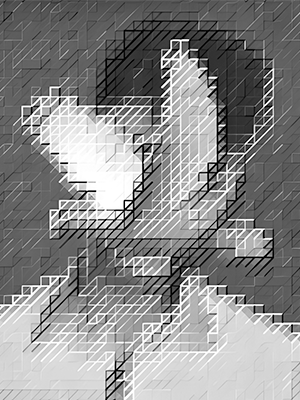

Currently
- Paranoid, reading about x-risks
Read me in
- TLDTD Journal
- HEIGHTS
- Bente-Bente Zine
- Pambansang Hamon ng Pagtula Anthology (2023, 2024, 2026)

Currently
Read me in
Summary
Láyon is a poet who writes in Filipino. They hold a Master’s degree in Data Science from Ateneo de Manila University. Upon graduation, they received the Mulry Award for Literary Excellence and the Ateneo College Awards of the Arts in Poetry. They are also a recipient of the National Youth Achievement in Literary Arts from the Philippine National Committee on Literary Arts.
Their poems regularly appear in HEIGHTS, Ateneo’s literary publication, where they served as managing editor. They are also a member of Linangan sa Imahen, Retorika, at Anyo (LIRA).
They like writing about AI, science, city life, and the posthuman. One of their most random (but on-brand) moments was winning the Philippine Space Agency’s Space Week poetry competition in 2025.
Akala ni Láyon matematika ang mapapangasawa niya. Ngunit nang makilala ang pagtula, hindi na mabuo-buo ang kanyang isip. Hanggang ngayon, hinahanap niya pa rin ang sariling layon.